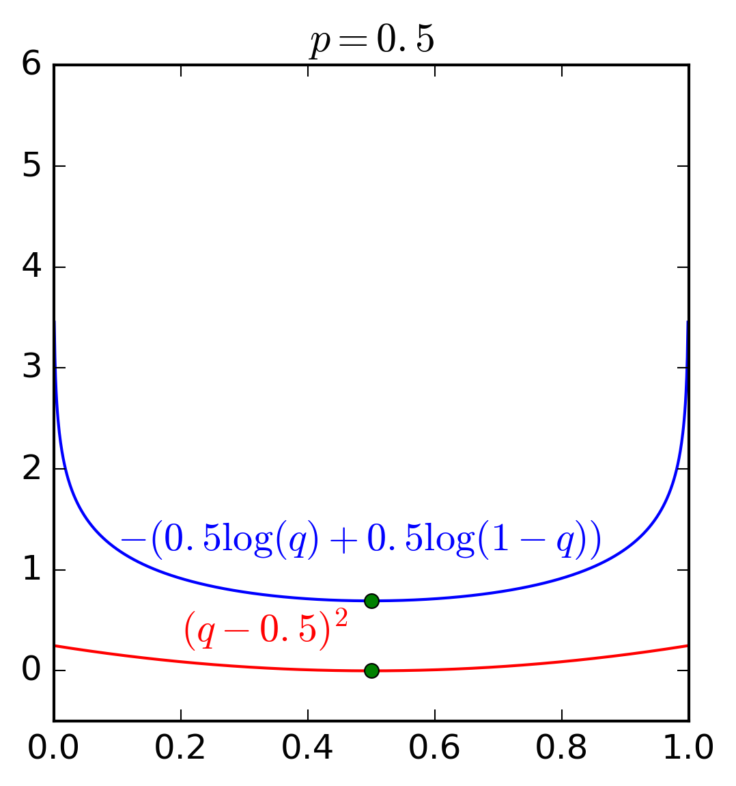

Các bài toán classification thực tế thường có rất nhiều classes (multi-class), các binary classifiers mặc dù có thể áp dụng cho các bài toán multi-class, chúng vẫn có những hạn chế nhất định. Với binary classifiers, kỹ thuật được sử dụng nhiều nhất one-vs-rest có một hạn chế về tổng các xác suất. Trong post này, một phương pháp mở rộng của Logistic Regression sẽ được giới thiệu giúp khắc phục hạn chế trên. Một lần nữa, dù là Softmax Regression, phương pháp này được sử dụng rộng rãi như một phương pháp classification.
Trong trang này:
- 1. Giới thiệu
- 2. Softmax function
- 3. Hàm mất mát và phương pháp tối ưu
- 4. Một vài lưu ý khi lập trình với Python
- 5. Ví dụ với Python
- 6. Thảo luận
- Tài liệu tham khảo
Một lưu ý nhỏ: Hàm mất mát của Softmax Regression trông có vẻ khá phức tạp, nhưng nếu kiên trì đọc đến phần phương pháp tối ưu, các bạn sẽ thấy vẻ đẹp ẩn sau sự phức tạp đó. Gradient của hàm mất mát và công thức cập nhật ma trận trọng số là rất đơn giản. (Đơn giản sau vài bước biến đổi toán học trông có vẻ phức tạp).
Nếu có điểm nào khó hiểu, bạn đọc được khuyến khích đọc lại các bài trước, trong đó quan trọng nhất là Bài 10: Logistic Regression.
1. Giới thiệu
Tôi xin phép được bắt đầu từ mô hình one-vs-rest được trình bày trong bài trước. Output layer (màu đỏ nhạt) có thể phân tách thành hai sublayer như hình dưới đây:

Dữ liệu \(\mathbf{x}\) có số chiều là \((d +1)\) vì có phần tử 1 được thêm vào phía trước, thể hiện hệ số tự do trong hàm tuyến tính. Hệ số tự do \(w_{0j}\) còn được gọi là bias.
Giả sử số classes là \(C\). Với one-vs-rest, chúng ta cần xây dựng \(C\) Logistic Regression khác nhau. Các đầu ra dự đoán được tính theo hàm sigmoid: \[ a_i = \text{sigmoid}(z_i) = \text{sigmoid}(\mathbf{w}_i^T\mathbf{x}) \] Trong kỹ thuật này, các phần tử \(a_i, i = 1, 2, \dots, C\) được suy ra trực tiếp chỉ với \(z_i\). Vì vậy, không có mối quan hệ chặt chẽ nào giữa các \(a_i\), tức tổng của chúng có thể nhỏ hơn hoặc lớn hơn 1. Nếu ta có thể khai thác được mỗi quan hệ giữa các \(z_i\) thì kết quả của bài toán classification có thể tốt hơn.
Chú ý rằng các mô hình Linear Regression, PLA, Logistic Regression chỉ có 1 node ở output layer. Trong các trường hợp đó, tham số mô hình chỉ là 1 vector \(\mathbf{w}\). Trong trường hợp output layer có nhiều hơn 1 node, tham số mô hình sẽ là tập hợp tham số \(\mathbf{w}_i\) ứng với từng node. Lúc này, ta có ma trận trọng số \(\mathbf{W} = [\mathbf{w}_1, \mathbf{w}_2, \dots, \mathbf{w}_C]\).
2. Softmax function
2.1. Công thức của Softmax function
Chúng ta cần một mô hình xác suất sao cho với mỗi input \(\mathbf{x}\), \(a_i\) thể hiện xác suất để input đó rơi vào class \(i\). Vậy điều kiện cần là các \(a_i\) phải dương và tổng của chúng bằng 1. Để có thể thỏa mãn điều kiện này, chúng ta cần nhìn vào mọi giá trị \(z_i\) và dựa trên quan hệ giữa các \(z_i\) này để tính toán giá trị của \(a_i\). Ngoài các điều kiện \(a_i\) lớn hơn 0 và có tổng bằng 1, chúng ta sẽ thêm một điều kiện cũng rất tự nhiên nữa, đó là: giá trị \(z_i = \mathbf{w}_i^T\mathbf{x}\) càng lớn thì xác suất dữ liệu rơi vào class \(i\) càng cao. Điều kiện cuối này chỉ ra rằng chúng ta cần một hàm đồng biến ở đây.
Chú ý rằng \(z_i \) có thể nhận giá trị cả âm và dương. Một hàm số mượt đơn giản có thể chắc chắn biến \(z_i \) thành một giá trị dương, và hơn nữa, đồng biến, là hàm \(\exp(z_i) = e^{z_i}\). Điều kiện mượt để thuận lợi hơn trong việc tính đạo hàm sau này. Điều kiện cuối cùng, tổng các \(a_i\) bằng 1 có thể được đảm bảo nếu:
\[ a_i = \frac{\exp(z_i)}{\sum_{j=1}^C \exp(z_j)}, ~~ \forall i = 1, 2, \dots, C \]
Hàm số này, tính tất cả các \(a_i\) dựa vào tất cả các \(z_i\), thõa mãn tất cả các điều kiện đã xét: dương, tổng bằng 1, giữ được thứ tự của \(z_i\). Hàm số này được gọi là softmax function. Chú ý rằng với cách định nghĩa này, không có xác suất \(a_i\) nào tuyệt đối bằng 0 hoặc tuyệt đối bằng 1, mặc dù chúng có thể rất gần 0 hoặc 1 khi \(z_i\) rất nhỏ hoặc rất lớn khi so sánh với các \(z_j, j \neq i\).
Lúc này, ta có thể giả sử rằng:
\[ P(y_k = i | \mathbf{x}_k; \mathbf{W}) = a_i \]
Trong đó, \(P(y = i | \mathbf{x}; \mathbf{W})\) được hiểu là xác suất để một điểm dữ liệu \(\mathbf{x}\) rơi vào class thứ \(i\) nếu biết tham số mô hình (ma trận trọng số) là \(\mathbf{W}\).
Hình vẽ dưới đây thể hiện mạng Softmax Regression dưới dạng neural network:

Ở phần bên phải, hàm tuyến tính \(\Sigma\) và hàm softmax (activation function) được tách riêng ra để phục vụ cho mục đích minh họa. Dạng short form ở bên phải là dạng hay được sử dụng trong các Neural Networks, lớp \(\mathbf{a}\) được ngầm hiểu là bao gồm cả lớp \(\mathbf{z}\).
2.2. Softmax function trong Python
Dưới đây là một đoạn code viết hàm softmax. Đầu vào là một ma trận với mỗi cột là một vector \(\mathbf{z}\), đầu ra cũng là một ma trận mà mỗi cột có giá trị là \(\mathbf{a} = \text{softmax}(\mathbf{z})\). Các giá trị của \(\mathbf{z}\) còn được gọi là scores.
import numpy as np
def softmax(Z):
"""
Compute softmax values for each sets of scores in V.
each column of V is a set of score.
"""
e_Z = np.exp(Z)
A = e_Z / e_Z.sum(axis = 0)
return A
2.3. Một vài ví dụ
Hình 3 dưới đây là một vài ví dụ về mối quan hệ giữa đầu vào và đầu ra của hàm softmax. Hàng trên màu xanh nhạt thể hiện các scores \(z_i\) với giả sử rằng số classes là 3. Hàng dưới màu đỏ nhạt thể hiện các giá trị đầu ra \(a_i\) của hàm softmax.

Có một vài quan sát như sau:
-
Cột 1: Nếu các \(z_i\) bằng nhau, thì các \(a_i\) cũng bằng nhau và bằng 1/3.
-
Cột 2: Nếu giá trị lớn nhất trong các \(z_i\) là \(z_1\) vẫn bằng 2, nhưng các giá trị khác thay đổi, thì mặc dù xác suất tương ứng \(a_1\) vẫn là lớn nhất, nhưng nó đã thay đổi lên hơn 0.5. Đây chính là một lý do mà tên của hàm này có từ soft. (max vì phẩn từ lớn nhất vẫn là phần tử lớn nhất).
-
Cột 3: Khi các giá trị \(z_i\) là âm thì các giá trị \(a_i\) vẫn là dương và thứ tự vẫn được đảm bảo.
-
Cột 4: Nếu \(z_1 = z_2\), thì \(a_1 = a_2\).
Bạn đọc có thể thử với các giá trị khác trực tiếp trên trình duyệt trong link này, kéo xuống phần Softmax.
2.4. Phiên bản ổn định hơn của softmax function
Khi một trong các \(z_i\) quá lớn, việc tính toán \(\exp(z_i)\) có thể gây ra hiện tượng tràn số (overflow), ảnh hưởng lớn tới kết quả của hàm softmax. Có một cách khắc phục hiện tượng này bằng cách dựa trên quan sát sau:
\[
\begin{eqnarray}
\frac{\exp(z_i)}{\sum_{j=1}^C \exp(z_j)} &=& \frac{\exp(-c)\exp(z_i)}{\exp(-c)\sum_{j=1}^C \exp(z_j)}\
&=& \frac{\exp(z_i-c)}{\sum_{j=1}^C \exp(z_j-c)}
\end{eqnarray}
\]
với \(c\) là một hằng số bất kỳ.
Vậy một phương pháp đơn giản giúp khắc phục hiện tượng overflow là trừ tất cả các \(z_i\) đi một giá trị đủ lớn. Trong thực nghiệm, giá trị đủ lớn này thường được chọn là \(c = \max_i z_i\). Vậy chúng ta có thể sửa đoạn code cho hàm softmax phía trên bằng cách trừ mỗi cột của ma trận đầu vào Z đi giá trị lớn nhất trong cột đó. Ta có phiên bản ổn định hơn là softmax_stable:
def softmax_stable(Z):
"""
Compute softmax values for each sets of scores in Z.
each column of Z is a set of score.
"""
e_Z = np.exp(Z - np.max(Z, axis = 0, keepdims = True))
A = e_Z / e_Z.sum(axis = 0)
return A
trong đó axis = 0 nghĩa là lấy max theo cột (axis = 1 sẽ lấy max theo hàng), keepdims = True để đảm bảo phép trừ giữa ma trận Z và vector thực hiện được.
3. Hàm mất mát và phương pháp tối ưu
3.1. One hot coding
Với cách biểu diễn network như trên, mỗi output sẽ không còn là một giá trị tương ứng với mỗi class nữa mà sẽ là một vector có đúng 1 phần tử bằng 1, các phần tử còn lại bằng 0. Phần tử bằng 1 năm ở vị trí tương ứng với class đó, thể hiện rằng điểm dữ liệu đang xét rơi vào class này với xác suất bằng 1 (sự thật là như thế, không cần dự đoán). Cách mã hóa output này chính là one-hot coding mà tôi đã đề cập trong bài K-means clustering và bài trước.
Khi sử dụng mô hình Softmax Regression, với mỗi đầu vào \(\mathbf{x}\), ta sẽ có đầu ra dự đoán là \(\mathbf{a} = \text{softmax}(\mathbf{W}^T\mathbf{x})\). Trong khi đó, đầu ra thực sự chúng ta có là vector \(\mathbf{y}\) được biểu diễn dưới dạng one-hot coding.
Hàm mất mát sẽ được xây dựng để tối thiểu sự khác nhau giữa đầu ra dự đoán \(\mathbf{a}\) và đầu ra thực sự \(\mathbf{y}\). Một lựa chọn đầu tiên ta có thể nghĩ tới là:
\[ J(\mathbf{W}) = \sum_{i=1}^N ||\mathbf{a}_i - \mathbf{y}_i||_2^2 \] Tuy nhiên đây chưa phải là một lựa chọn tốt. Khi đánh giá sự khác nhau (hay khoảng cách) giữa hai phân bố xác suất (probability distributions), chúng ta có một đại lượng đo đếm khác hiệu quả hơn. Đại lượng đó có tên là cross entropy.
3.2. Cross Entropy
Cross entropy giữa hai phân phối \(\mathbf{p}\) và \(\mathbf{q}\) được định nghĩa là: \[ H(\mathbf{p}, \mathbf{q}) = \mathbf{E_p}[-\log \mathbf{q}] \]
Với \(\mathbf{p}\) và \(\mathbf{q}\) là rời rạc (như \(\mathbf{y}\) và \(\mathbf{a}\) trong bài toán của chúng ta), công thức này được viết dưới dạng:
\[ H(\mathbf{p}, \mathbf{q}) =-\sum_{i=1}^C p_i \log q_i ~~~ (1) \]
Để hiểu rõ hơn ưu điểm của hàm cross entropy và hàm bình phương khoảng cách thông thường, chúng ta cùng xem Hình 4 dưới đây. Đây là ví dụ trong trường hợp \(C = 2\) và \(p_1\) lần lượt nhận các giá trị \(0.5, 0.1\) và \(0.8\).
|  |
 |
Có hai nhận xét quan trọng sau đây:
-
Giá trị nhỏ nhất của cả hai hàm số đạt được khi \(q = p\) tại hoành độ của các điểm màu xanh lục.
-
Quan trọng hơn, hàm cross entropy nhận giá trị rất cao (tức loss rất cao) khi \(q\) ở xa \(p\). Trong khi đó, sự chênh lệch giữa các loss ở gần hay xa nghiệm của hàm bình phương khoảng cách \((q - p)^2\) là không đáng kể. Về mặt tối ưu, hàm cross entropy sẽ cho nghiệm gần với \(p\) hơn vì những nghiệm ở xa bị trừng phạt rất nặng.
Hai tính chất trên đây khiến cho cross entropy được sử dụng rộng rãi khi tính khoảng cách giữa hai phân phối xác suất.
Chú ý: Hàm cross entropy không có tính đối xứng \(H(\mathbf{p}, \mathbf{q}) \neq H(\mathbf{q}, \mathbf{p})\). Điều này có thể dễ dàng nhận ra ở việc các thành phần của \(\mathbf{p}\) trong công thức \((1)\) có thể nhận giá trị bằng 0, trong khi đó các thành phần của \(\mathbf{q}\) phải là dương vì \(\log(0)\) không xác định. Chính vì vậy, khi sử dụng cross entropy trong các bài toán supervised learning, \(\mathbf{p}\) thường là đầu ra thực sự vì đầu ra thực sự chỉ có 1 thành phần bằng 1, còn lại bằng 0 (one-hot), \(\mathbf{q}\) thường là đầu ra dự đoán, khi mà không có xác suất nào tuyệt đối bằng 1 hoặc tuyệt đối bằng 0 cả.
Trong Logistic Regression, chúng ta cũng có hai phân phối đơn giản. (i) Đầu ra thực sự của điểm dữ liệu đầu vào \(\mathbf{x}_i\) có phân phối xác suất là \([y_i; 1 - y_i]\) với \(y_i\) là xác suất để điểm dữ liệu đầu vào rơi vào class thứ nhất (bằng 1 nếu \(y_i = 1\), bằng 0 nếu \(y_i = 0\)). (ii). Đầu ra dự đoán của điểm dữ liệu đó là \(a_i = \text{sigmoid}(\mathbf{w}^T\mathbf{x})\) là xác suất để điểm đó rơi vào class thứ nhất. Xác suất để điểm đó rơi vào class thứ hai có thể được dễ dàng suy ra lf \(1 - a_i\). Vì vậy, hàm mất mát trong Logistic Regression: \[ J(\mathbf{w}) = -\sum_{i=1}^N(y_i \log {a}_i + (1-y_i) \log (1 - {a}_i)) \] chính là một trường hợp đặc biệt của Cross Entropy. (\(N\) được dùng để thể hiện số điểm dữ liệu trong tập training).
Với Softmax Regression, trong trường hợp có \(C\) classes, loss giữa đầu ra dự đoán và đầu ra thực sự của một điểm dữ liệu \(\mathbf{x}_i\) được tính bằng: \[ J(\mathbf{W};\mathbf{x}_i, \mathbf{y}_i) = -\sum_{j=1}^C y_{ji}\log(a_{ji}) \] Với \(y_{ji}\) và \( a_{ji}\) lần lượt là là phần tử thứ \(j\) của vector (xác suất) \(\mathbf{y}_i\) và \(\mathbf{a}_i\). Nhắc lại rằng đầu ra \(\mathbf{a}_i\) phụ thuộc vào đầu vào \(\mathbf{x}_i\) và ma trận trọng số \(\mathbf{W}\).
3.3. Hàm mất mát cho Softmax Regression
Kết hợp tất cả các cặp dữ liệu \(\mathbf{x}_i, \mathbf{y}_i, i = 1, 2, \dots, N\), chúng ta sẽ có hàm mất mát cho Softmax Regression như sau:
\[
\begin{eqnarray}
J(\mathbf{W}; \mathbf{X}, \mathbf{Y}) = -\sum_{i = 1}^N \sum_{j = 1}^C y_{ji}\log(a_{ji}) \
= -\sum_{i = 1}^N \sum_{j = 1}^C y_{ji}\log\left(\frac{\exp(\mathbf{w}_j^T\mathbf{x}_i)}{\sum_{k=1}^C \exp(\mathbf{w}_k^T\mathbf{x}_i)}\right)
\end{eqnarray}
\]
Với ma trận trọng số \(\mathbf{W}\) là biến cần tối ưu. Hàm mất mát này trông có vẻ đáng sợ, nhưng đừng sợ, đọc tiếp các bạn sẽ thấy đạo hàm của nó rất đẹp (và đáng yêu).
3.4. Tối ưu hàm mất mát
Một lần nữa, chúng ta lại sử dụng Stochastic Gradient Descent (SGD) ở đây.
Với chỉ một cặp dữ liệu \((\mathbf{x}_i, \mathbf{y}_i)\), ta có:
\[
J_i(\mathbf{W}) \triangleq J(\mathbf{W}; \mathbf{x}_i, \mathbf{y}_i) =
\]
\[
\begin{eqnarray}
&=& -\sum_{j = 1}^C y_{ji}\log\left(\frac{\exp(\mathbf{w}_j^T\mathbf{x}_i)}{\sum_{k=1}^C \exp(\mathbf{w}_k^T\mathbf{x}_i)}\right) \
&=& -\sum_{j=1}^C\left(y_{ji} \mathbf{w}_j^T\mathbf{x}_i - y_{ji}\log\left(\sum_{k=1}^C \exp(\mathbf{w}_k^T\mathbf{x}_i)\right)\right) \
&=& -\sum_{j=1}^C y_{ji} \mathbf{w}_j^T\mathbf{x}_i + \log\left(\sum_{k=1}^C \exp(\mathbf{w}_k^T\mathbf{x}_i)\right) ~~ (3)
\end{eqnarray}
\]
trong biến đổi ở dòng cuối cùng, tôi đã sử dụng quan sát: \(\sum_{j=1}^C y_{ji} = 1\) vì nó là tổng các xác suất.
Tiếp theo ta sử dụng công thức: \[ \frac{\partial J_i(\mathbf{W})}{\partial \mathbf{W}} = \left[\frac{\partial J_i(\mathbf{W})}{\partial \mathbf{w}_1}, \frac{\partial J_i(\mathbf{W})}{\partial \mathbf{w}_2}, \dots, \frac{\partial J_i(\mathbf{W})}{\partial \mathbf{w}_C} \right]~~(4) \]
Trong đó, gradient theo từng cột có thể tính được dựa theo \((3)\):
\[
\begin{eqnarray}
\frac{\partial J_i(\mathbf{W})}{\partial \mathbf{w}_j} &=& -y_{ji}\mathbf{x}_i +
\frac{\exp(\mathbf{w}_j^T\mathbf{x}_i)}{\sum_{k = 1}^C \exp(\mathbf{w}_k^T\mathbf{x}_i)}\mathbf{x}_i \
&=& -y_{ji}\mathbf{x}_i + a_{ji} \mathbf{x}_i = \mathbf{x}_i (a_{ji} - y_{ji}) \
&=& e_{ji}\mathbf{x}_{i} ~(\text{where}~ e_{ji} = a_{ji} - y_{ji}) ~~(5)
\end{eqnarray}
\]
Giá trị \(e_{ji} = a_{ji} - y_{ji} \) có thể được coi là sai số dự đoán.
Đến đây ta đã được biểu thức rất đẹp rồi. Kết hợp \((4)\) và \((5)\) ta có: \[ \frac{\partial J_i(\mathbf{W})}{\partial \mathbf{W}} = \mathbf{x}_i [e_{1i}, e_{2i}, \dots, e_{Ci}] = \mathbf{x}_i\mathbf{e}_i^T \]
Từ đây ta cũng có thể suy ra rằng: \[ \frac{\partial J(\mathbf{W})}{\partial \mathbf{W}} = \sum_{i=1}^N \mathbf{x}_i\mathbf{e}_i^T = \mathbf{X}\mathbf{E}^T \] với \(\mathbf{E} = \mathbf{A - Y}\). Công thức tính gradient đơn giản thế này giúp cho cả Batch Gradient Descent, Stochastic Gradient Descent (SGD), và Mini-batch Gradient Descent đều có thể dễ dàng được áp dụng.
Giả sử rằng chúng ta sử dụng SGD, công thức cập nhật cho ma trận trọng số \(\mathbf{W}\) sẽ là: \[ \mathbf{W} = \mathbf{W} +\eta \mathbf{x}_{i}(\mathbf{y}_i - \mathbf{a}_i)^T \]
Bạn có thấy công thức này giống với công thức cập nhật của Logistic Regression không!
Thực ra:
3.5. Logistic Regression là một trường hợp đặt biệt của Softmax Regression
Khi \(C = 2\), Softmax Regression và Logistic Regression là giống nhau. Thật vậy, đầu ra dự đoán của Softmax Regression với \(C= 2\) có thể được viết dưới dạng:
\[
\begin{eqnarray}
a_1 &=& \frac{\exp(\mathbf{w}_1^T\mathbf{x})} {\exp(\mathbf{w}_1^T\mathbf{x}) + \exp(\mathbf{w}_2^T\mathbf{x})} \
&=& \frac{1}{1 + \exp((\mathbf{w}_2 - \mathbf{w}_1)^T\mathbf{x})}
\end{eqnarray}
\]
Đây chính là sigmoid function, là đầu ra dự đoán theo Logistic Regression. Khi \(C = 2\), bạn đọc cũng có thể thấy rằng hàm mất mát của Logistic và Softmax Regression đều là cross entropy. Hơn nữa, mặc dù có 2 outputs, Softmax Regression có thể rút gọn thành 1 output vì tổng 2 outputs luôn luôn bằng 1.
Softmax Regression còn có các tên gọi khác là Multinomial Logistic Regression, Maximum Entropy Classifier, hay rất nhiều tên khác nữa. Xem thêm Multinomial logistic regression - Wikipedia
4. Một vài lưu ý khi lập trình với Python
4.1. Bắt đầu với dữ liệu nhỏ
Các bài toán Machine Learning thường có độ phức tạp cao với lượng dữ liệu lớn và nhiều chiều. Để có thể áp dụng một thuật toán vào một bài toán cụ thể, trước tiên chúng ta cần áp dụng thuật toán đó vào simulated data (dữ liệu giả) với số chiều và số điểm dữ liệu nhỏ hơn. Simulated data này thường được tạo ngẫu nhiên (có thể thêm vài ràng buộc tùy vào đặc thù của dữ liệu). Với simulated data nhỏ, chúng ta có thể debug nhanh hơn và thử với nhiều trường hợp simulated data khác nhau. Khi nào thấy thuật toán chạy đúng chúng ta mới đưa dữ liệu thật vào.
Với Softmax Regression, tôi tạo simulated data như sau:
import numpy as np
# randomly generate data
N = 2 # number of training sample
d = 2 # data dimension
C = 3 # number of classes
X = np.random.randn(d, N)
y = np.random.randint(0, 3, (N,))
Trong ví dụ đơn giản này, số điểm dữ liệu chỉ là N = 2, số chiều dữ liệu d = 2, và số classes C = 3. Những giá trị đủ nhỏ này giúp cho việc kiểm tra có thể được thực hiện một cách tức thì. Sau khi thuật toán chạy đúng với những giá trị nhỏ này, ta có thể thay N, d, C bằng vài giá trị khác trước khi sử dụng dữ liệu thật.
4.2. Ma trận one-hot coding
Có một bước quan trọng nữa trong Softmax Regression là phải chuyển đổi mỗi label \(y_i\) thành một vector \(\mathbf{y}_i\) dưới dạng one-hot coding. Trong đó, chỉ có đúng một phần tử của \(\mathbf{y}_i\) bằng 1, các phần tử còn lại bằng 0. Như vậy, với \(N\) điểm dữ liệu và \(C\) classes, chúng ta sẽ có một ma trận có kích thước \(C \times N\) trong đó mỗi cột chỉ có đúng 1 phần tử bằng 1, còn lại bằng 0. Nếu chúng ta lưu toàn bộ dữ liệu này thì sẽ bị lãng phí bộ nhớ.
Một cách thường được sử dụng là lưu ma trận output \(\mathbf{Y}\) dưới dạng sparse matrix. Về cơ bản, cách làm này chỉ lưu các vị trí khác 0 của ma trận và giá trị khác 0 đó.
Python có hàm scipy.sparse.coo_matrix giúp chúng ta thực hiện việc này. Với one-hot coding, tôi thực hiện như sau:
## One-hot coding
from scipy import sparse
def convert_labels(y, C = C):
"""
convert 1d label to a matrix label: each column of this
matrix coresponding to 1 element in y. In i-th column of Y,
only one non-zeros element located in the y[i]-th position,
and = 1 ex: y = [0, 2, 1, 0], and 3 classes then return
[[1, 0, 0, 1],
[0, 0, 1, 0],
[0, 1, 0, 0]]
"""
Y = sparse.coo_matrix((np.ones_like(y),
(y, np.arange(len(y)))), shape = (C, len(y))).toarray()
return Y
Y = convert_labels(y, C)
4.3. Kiểm tra đạo hàm
Điều cốt lõi trong cách tối ưu hàm mất mát là tính gradient. Với biểu thức toán trông khá rối mắt như trên, rất dễ để các bạn nhầm lẫn ở một bước nào đó. Softmax Regression vẫn là một thuật toán đơn giản, sau này các bạn sẽ thấy nhưng biểu thức phức tạp hơn nhiều. Rất khó để có thể tính toán đúng gradient ở ngay lần thử đầu tiên.
Trong thực nghiệm, một cách thường được làm là so sánh gradient tính được với numeric gradient, tức gradient tính theo định nghĩa. Bạn đọc được khuyến khích đọc cách Kiểm tra đạo hàm.
Việc kiểm tra đạo hàm được thực hiện như sau:
# cost or loss function
def cost(X, Y, W):
A = softmax(W.T.dot(X))
return -np.sum(Y*np.log(A))
W_init = np.random.randn(d, C)
def grad(X, Y, W):
A = softmax((W.T.dot(X)))
E = A - Y
return X.dot(E.T)
def numerical_grad(X, Y, W, cost):
eps = 1e-6
g = np.zeros_like(W)
for i in range(W.shape[0]):
for j in range(W.shape[1]):
W_p = W.copy()
W_n = W.copy()
W_p[i, j] += eps
W_n[i, j] -= eps
g[i,j] = (cost(X, Y, W_p) - cost(X, Y, W_n))/(2*eps)
return g
g1 = grad(X, Y, W_init)
g2 = numerical_grad(X, Y, W_init, cost)
print(np.linalg.norm(g1 - g2))
2.70479295591e-10
Như vậy, sự khác biệt giữa hai đạo hàm là rất nhỏ. Nếu các bạn thử vài trường hợp khác nữa của N, C, d, chúng ta sẽ thấy sự sai khác vẫn là nhỏ. Điều này chứng tỏ đạo hàm chúng ta tính được coi là chính xác. (Vẫn có thể có bug, chỉ khi nào kết quả cuối cùng với dữ liệu thật là chấp nhận được thì ta mới có thể bỏ cụm từ ‘có thể coi’ đi).
Chú ý rằng, nếu N, C, d quá lớn, việc tính toán numerical_grad trở nên cực kỳ tốn thời gian và bộ nhớ. Chúng ta chỉ nên kiểm tra với những dữ liệu nhỏ.
4.4. Hàm chính cho training Softmax Regression
Sau khi đã có những hàm cần thiết và gradient được tính đúng, chúng ta có thể viết hàm chính có training Softmax Regression (theo SGD) như sau:
def softmax_regression(X, y, W_init, eta, tol = 1e-4, max_count = 10000):
W = [W_init]
C = W_init.shape[1]
Y = convert_labels(y, C)
it = 0
N = X.shape[1]
d = X.shape[0]
count = 0
check_w_after = 20
while count < max_count:
# mix data
mix_id = np.random.permutation(N)
for i in mix_id:
xi = X[:, i].reshape(d, 1)
yi = Y[:, i].reshape(C, 1)
ai = softmax(np.dot(W[-1].T, xi))
W_new = W[-1] + eta*xi.dot((yi - ai).T)
count += 1
# stopping criteria
if count%check_w_after == 0:
if np.linalg.norm(W_new - W[-check_w_after]) < tol:
return W
W.append(W_new)
return W
eta = .05
d = X.shape[0]
W_init = np.random.randn(d, C)
W = softmax_regression(X, y, W_init, eta)
# W[-1] is the solution, W is all history of weights
4.5. Hàm dự đoán class cho dữ liệu mới
Sau khi train Softmax Regression và tính được ma trận hệ số W, class của một dữ liệu mới có thể tìm được bằng cách xác định vị trí của giá trị lớn nhất ở đầu ra dự đoán (tương ứng với xác suất điểm dữ liệu rơi vào class đó là lớn nhất). Chú ý rằng, các class được đánh số là 0, 1, 2, ..., C.
def pred(W, X):
"""
predict output of each columns of X
Class of each x_i is determined by location of max probability
Note that class are indexed by [0, 1, 2, ...., C-1]
"""
A = softmax_stable(W.T.dot(X))
return np.argmax(A, axis = 0)
5. Ví dụ với Python
5.1. Simulated data
Để minh họa cách áp dụng Softmax Regression, tôi tiếp tục làm trên simulated data.
Tạo ba cụm dữ liệu
means = [[2, 2], [8, 3], [3, 6]]
cov = [[1, 0], [0, 1]]
N = 500
X0 = np.random.multivariate_normal(means[0], cov, N)
X1 = np.random.multivariate_normal(means[1], cov, N)
X2 = np.random.multivariate_normal(means[2], cov, N)
# each column is a datapoint
X = np.concatenate((X0, X1, X2), axis = 0).T
# extended data
X = np.concatenate((np.ones((1, 3*N)), X), axis = 0)
C = 3
original_label = np.asarray([0]*N + [1]*N + [2]*N).T
Phân bố của các dữ liệu được cho như hình dưới:

Thực hiện Softmax Regression
W_init = np.random.randn(X.shape[0], C)
W = softmax_regression(X, original_label, W_init, eta)
print(W[-1])
[[ 8.45809734 -3.88415491 -3.44660294]
[-1.11205751 1.50441603 -0.76358758]
[ 0.24484886 0.26085383 3.3658872 ]]
Kết quả thu được

Ta thấy rằng Softmax Regression đã tạo ra các vùng cho mỗi class. Kết quả này là chấp nhận được. Từ hình trên ta cũng thấy rằng đường ranh giới giữa các classes là đường thẳng. Tôi sẽ chứng minh điều này ở phần sau.
5.2. Softmax Regression cho MNIST
Các ví dụ trên đây được trình bày để giúp bạn đọc hiểu rõ Softmax Regression hoạt động như thế nào. Khi làm việc với các bài toán thực tế, chúng ta nên sử dụng các thư viện có sẵn, trừ khi bạn có thêm bớt vài số hạng nữa trong hàm mất mat.
Softmax Regression cũng được tích hợp trong hàm sklearn.linear_model.LogisticRegression của thư viện sklearn.
Để sử dụng Softmax Regression, ta cần thêm một vài thuộc tính nữa:
linear_model.LogisticRegression(C=1e5, solver = 'lbfgs', multi_class = 'multinomial')
Với Logistic Regression, multi_class = 'ovr' là giá trị mặc định, tương ứng với one-vs-rest. solver = 'lbfgs' là một phương pháp tối ưu cũng dựa trên gradient nhưng hiệu quả hơn và phức tạp hơn Gradient Descent. Bạn đọc có thể đọc thêm ở đây.
# %reset
import numpy as np
from mnist import MNIST
import matplotlib.pyplot as plt
from sklearn import linear_model
from sklearn.metrics import accuracy_score
mntrain = MNIST('../MNIST/')
mntrain.load_training()
Xtrain = np.asarray(mntrain.train_images)/255.0
ytrain = np.array(mntrain.train_labels.tolist())
mntest = MNIST('../MNIST/')
mntest.load_testing()
Xtest = np.asarray(mntest.test_images)/255.0
ytest = np.array(mntest.test_labels.tolist())
# train
logreg = linear_model.LogisticRegression(C=1e5,
solver = 'lbfgs', multi_class = 'multinomial')
logreg.fit(Xtrain, ytrain)
# test
y_pred = logreg.predict(Xtest)
print "Accuracy: %.2f %%" %(100*accuracy_score(ytest, y_pred.tolist()))
Accuracy: 92.59 %
So với kết quả hơn 91% của one-vs-rest Logistic Regression thì Softmax Regression đã cải thiện được một chút. Kết quả thấp như thế này là có thể dự đoán được vì thực ra Softmax Regression vẫn chỉ tạo ra các đường biên là các đường tuyến tính (phẳng).
6. Thảo luận
6.1 Boundary tạo bởi Softmax Regression là linear
Thật vậy, dựa vào hàm softmax thì một điểm dữ liệu \(\mathbf{x}\) được dự đoán là rơi vào class \(j\) nếu \(a_{j} \geq a_{k}, ~\forall k \neq j\). Bạn đọc có thể chứng minh được rằng \(a_{j} \geq a_{k} \Leftrightarrow z_{j} \geq z_{k}\), hay nói cách khác:
\[
\mathbf{w}_j^T \mathbf{x} \geq \mathbf{w}_k^T\mathbf{x}\
\Leftrightarrow (\mathbf{w}_j - \mathbf{w}_k)^T\mathbf{x} \geq 0
\]
Đây chính là một biểu thức tuyến tính. Vậy boundary tạo bởi Softmax Regression có dạng tuyến tính. (Xem thêm boundary tạo bởi Logistic Regression)
6.2. Softmax Regression là một trong hai classifiers phổ biến nhất
Softmax Regression cùng với Support Vector Machine (tôi sẽ trình bày sau vài bài nữa) là hai classifier phổ biến nhất được dùng hiện nay. Softmax Regression đặc biệt được sử dụng nhiều trong các mạng Neural có nhiều lớp (Deep Neural Networks hay DNN). Những lớp phía trước có thể được coi như một bộ Feature Extractor, lớp cuối cùng của DNN cho bài toán classification thường là Softmax Regression.
6.3. Source code
Các bạn có thể tìm thấy source code trong jupyter notebook này.
Tài liệu tham khảo
[2] sklearn.linear_model.LogisticRegression